Otros idiomas: Inglés Alemán 繁体中文 Darknet: Tor, I2P, ZeroNet
Estás siendo observado. Tanto entidades privadas como aquellas financiadas por los gobiernos están monitorizando y registrando tus actividades en la red. privacytools-es ofrece conocimiento y herramientas para proteger tu privacidad contra el seguimiento global de los usuarios.
¿Privacidad? Yo no tengo nada que esconder.
Durante los últimos 16 meses, mientras debatía este asunto por todo el mundo, cada vez que alguien me ha dicho, "realmente no me preocupa la invasión de la privacidad porque no tengo nada que esconder." yo siempre les digo lo mismo. Saco un bolígrafo y escribo mi dirección de correo. Y les digo: "Aquí está mi dirección de correo electrónico. Lo que quiero que hagas cuando llegues a casa es que me mandes por correo las contraseñas de todas tus cuentas de correo, no sólo las formales sino todas ellas, porque quiero ser capaz de trolear lo que estás haciendo en la red, leer lo que quiera y publicar lo que encuentre interesante. Después de todo, no eres una mala persona, si no estás haciendo nada incorrecto, no tendrás nada que esconder". Ni una sola persona ha aceptado mi oferta.
Read also:
- El argumento: nada que ocultar (Wikipedia)
- ¿Cómo puedes refutar el argumento "no tengo nada que ocultar"? (en inglés)

El acuerdo entre EEUU y Reino Unido o acuerdo "UKUSA" es un tratado entre Reino Unido, Estados Unidos, Australia, Canada, y Nueva Zelanda para recopilar de manera conjunta, analizar y compartir recursos. Los miembros de este grupo, conocidos como los Cinco Ojos, están enfocados recopilar y analizar desde diferentes partes del mundo. Mientras que los países del grupo de los Cinco Ojos han acordado en no espiarse entre ellos como adversarios, las filtraciones de Snowden han revelado que algunos de los miembros del grupo han monitorizado a ciudadanos de otros países y comparten recursos para evitar quebrantar leyes nacionales que les prohiben espiar a sus propios ciudadanos. La alianza de los Cinco Ojos también coopera con grupos de terceros países para compartir recursos (formando el grupo de los Nueve Ojos y de los Catorce Ojos), sin embargo los Cinco Ojos y terceros países pueden espiarse, y de hecho lo hacen, los unos a los otros.
Cinco Ojos
2. Canada
3. Nueva Zelanda
4. Reino Unido
5. Estados Unidos de América
Nueve Ojos
7. Francia
8. Países Bajos
9. Noruega
Catorce Ojos
11. Alemania
12. Italia
13. España
14. Suecia
¿Por qué no es recomendable escoger servicios con base en Estados Unidos?

Los servicios con sede en Estados Unidos no son recomendables debido a los programas de vigilancia de este país, mediante mediante Cartas de Seguridad Nacional (en inglés National Security Letters, o simplemente NSLs) y acompañado de leyes mordaza, que prohiben al destinatario hablar sobre esa petición. Esta combinación permite al gobierno forzar secretamente a compañías el garantizar el acceso completo a los datos del cliente y transformar el servicio en una herramienta de vigilancia masiva.
Un ejemplo de esto es Lavabit, un servicio de correo ya discontinuado creado por Ladar Levison. El FBI pidió las grabaciones de Snowden después de encontrar que él usaba ese servicio. Ya que Lavabit no quiso guardar los registros y los contenidos de los correos almacenados fueron cifrados, el FBI envió una citación (con una orden de silencio) para su servicio de claves SSL. Tener las claves SSL les permitiría acceder a las comunicaciones (tanto a los metadatos como a contenido descifrado) en tiempo real para todos los usuarios de Lavabit, no sólo las de Snowden.
Finalmente, Levison entregó las claves SSL y apagó el servicio al mismo tiempo. El gobierno de Estados Unidos, entonces amenazó a Levison con el arresto, argumentando que el apagado de los servicios era una violación de una orden judicial.
Información relacionada
- Evite todos los servicios establecidos en EEUU y Reino Unido (enlace en inglés).
- Comprueba que el certificado "warrant canaries" funciona basándose en el ejemplo surespot (enlace en inglés).
- https://es.wikipedia.org/wiki/UKUSA
- https://es.wikipedia.org/wiki/Lavabit
- https://en.wikipedia.org/wiki/Key_disclosure_law (enlace en inglés)
- http://en.wikipedia.org/wiki/Portal:Mass_surveillance (enlace en inglés)
| Lista ordenable de proveedores de VPN | Precio por año | Prueba gratuita | Nº Servidores | Jurisdicción | Sitio web |
|---|---|---|---|---|---|
 |
54 € | Sí | 162 | Italia | AirVPN.org |
 |
45 € | No | 5 | Suecia | AzireVPN.com |
 |
99 € | No | 27 | Hong Kong | blackVPN.com |
| 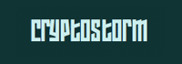 | $ 52 | Sí | 18 | Islandia | Cryptostorm.is |
 |
39,99 € | No | 432 | Chipre del Norte | EarthVPN.com |
 |
$ 35.88 | No | 27 | Suecia | FrootVPN.com |
| 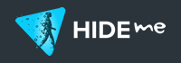 | $ 65.04 | Sí | 88 | Malasia | hide.me |
| $ 100 | Sí | 21 | Gibraltar | IVPN.net | |
 |
60 € | Sí | 52 | Suecia | Mullvad.net |
 |
$ 69 | Sí | 475 | Panamá | NordVPN.com |
| $ 84 | Sí | 24 | Suecia | oVPN.se | |
| 124.95 € | No | 41 | Panamá | Perfect-Privacy.com | |
 |
$ 90 | No | 300 | Seychelles | Proxy.sh |
 |
$ 39.95 | Sí | 48 | Seychelles | Trust.Zone |
| 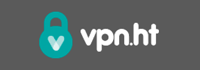 | $ 39.99 | No | 122 | Hong Kong | VPN.ht |
| $ 35.88 | No | 80 | Suecia | VPNTunnel.com |
Nuestro criterio para escoger los servidores VPN
- Que operen fuera de EEUU o de países dentro del grupo de los Cinco Ojos.
Más: Evite todos los servicios establecidos en EEUU y Reino Unido (enlace en inglés). - Soporte al software OpenVPN.
- Que acepte Bitcoin, efectivo, tarjetas de débito o tarjetas de efectivo como método de pago.
- Que no sea necesaria información personal a la hora de crear una cuenta. Sólo nombre de usuario, contraseña y correo electrónico.
No estamos afiliados con ninguno de los servidores VPN mostrados en la lista superior. De esta manera podemos ofrecerte recomendaciones honestas.
Más servidores VPN
Hoja de cálculo con los datos imparciales, independientemente verificables de más de 100 servicios de VPN (Únete a la discusión en Reddit)
Información relacionada con VPN (enlaces en inglés)
- ¿Qué servicios de VPN se toman tu anonimato en serio? 2016
(Nota: Los servicios listados en primeras posiciones en el artículos de TorrentFreaks son patrocinados) - Cómo hacer los VPN todavía más seguros
- VPN, privacidad y anonimato - SpiderOak
- Ten cuidado con los falsos análisis - VPN Marketing y programas de afiliados
- Soy anónimo cuando uso un VPN - 7 mitos desenmascarados
(Nota: Aunque esto es una buena lectura, también utilizan el artículo como autopromoción) - Proxy.sh VPN fisgoneando el tráfico del servidor para atrapar a un hacker
- Política ética - Todas las razones por las que Proxy.sh debería permitir los registros
- IVPN.net recopilará tu correo electrónico y dirección IP después de registrarte
Lee ladeclaración de correo electrónico de IVPN. - blackVPN anunció que borrará los registros de conexión después de desconectar
- No utilizar LT2P IPSec, utilizar otros protocolos.

Una alerta de canario (más conocido por su nombre en inglés "warrant canary") es un documento publicado que indica que una organización no ha recibido ninguna citación secreta durante un período específico de tiempo. Si este documento deja de ser actualizado durante un tiempo específico entonces el usuario debe asumir que el servicio ha recibido algún tipo de citación y debería dejar de utilizar el servicio.
El curioso nombre deriva del método que utilizaban los antiguos mineros al bajar a las minas. Estos llevaban consigo un canario que siempre estaba cantando. Cuando el canario dejaba de cantar, significaba que había una fuga de grisú, y eso alertaba a los mineros para salir de la mina.
Ejemplos de alertas de canario o "warrant canary":
- https://proxy.sh/canary
- https://www.ivpn.net/resources/canary.txt
- https://www.vpnsecure.me/files/canary.txt
- https://www.bolehvpn.net/canary.txt
- https://lokun.is/canary.txt
- https://www.ipredator.se/static/downloads/canary.txt
Información relacionada con la alerta de canario (enlaces en inglés)
- Preguntas más frecuentes sobre la alerta de canario
- Compañías y organizaciones con alertas de canario
Mozilla Firefox
Firefox es rápido, seguro, de código abierto y respeta tu privacidad. No olvides ajustar la configuración de acuerdo a nuestras recomendaciones: WebRTC y about:config y consigue los complementos de privacidad.
Sistemas operativos: Windows, Mac, GNU/Linux, Android, BSD.
Cuando visitas una página web, tu navegador de manera voluntaria envía información sobre su configuración, como fuentes disponibles, tipo de navegador y complementos. Si esta combinación es única, puede ser posible identificarte y rastrearte sin necesidad de utilizar cookies. La EFF (Electronic Frontier Foundation) ha creado una herramienta llamada Panopticlick para comprobar cómo de único es tu navegador.
Es necesario entender que la mayoría de los navegadores están informando, y después utilizan esas variables para llevar tu navegador a una misma población. Esto significa tener las mismas fuentes, extensiones instaladas como la gran mayoría de las instalaciones por defecto. Deberías tener una cadena de "user agent" falsa para coincidir con lo que tiene la extensa base de datos de ususarios. Necesitas tener los mismos ajustes habilitados y deshabilitados, como DNT y WebGL. Necesitas que tu navegador sea similar al común de usuarios. Deshabilitar JavaScript, usar Linux, o incluso el navegador Tor, hará que tu navegador destaque de entre las masas.
Los navegadores web modernos no han sido diseñados para asegurar tu privacidad en la web. En lugar de preocuparse por la huella digital, parece más práctico utilizar extensiones de software libre como Privacy Badger, uBlock Origin y Disconnect. Estos no sólo respetan tu libertad, sino también tu privacidad. Puedes conseguir mucho más con estas herramientas que intentando manipular la huella digital de tu navegador.
Información relacionada (enlaces en inglés)
- ¿Cómo de único es tu navegador? Peter Eckersley, EFF.
- Únete a nuestra discusión en reddit.com sobre la huella digital del navegador.
- Nuestra selección de complementos sobre privacidad para Firefox.
- BrowserLeaks.com - Herramientas de comprobación de seguridad para el navegador web, que te dicen exactamente qué datos de tu identidad personal pueden estar filtrándose sin ningún permiso cuando navegas por la red.
Mientras que software como NoScript previene esto, es probablemente una buena idea bloquear este protocolo directamente, simplemente para estar a salvo.
¿Cómo deshabilitar WebRTC en Firefox?
De manera resumida: pon "media.peerconnection.enabled" a "false" en "about:config".
Explicado:
- Escribe "about:config" en la barra de direcciones de Firefox y presiona Enter.
- Presiona el botón "¡Tendré cuidado, lo prometo!"
- Busca "media.peerconnection.enabled"
- Haz doble clic en la entrada, la columna "Valor" debería ser ahora "false"
- Hecho. Vuelve a hacer de nuevo el test de WebRTC.
Si quieres asegurarte de que cada ajuste relacionado con WebRTC está realmente deshabilitado cambia estos ajustes:
- media.peerconnection.turn.disable = true
- media.peerconnection.use_document_iceservers = false
- media.peerconnection.video.enabled = false
- media.peerconnection.identity.timeout = 1
Ahora puedes estar 100% seguro de que WebRTC está deshabilitado.
¿Cómo solucionar el filtrado mediante WebRTC en Google Chrome?
No hay una solución conocida que funcione, sólo una extensión que puede ser facilmente burlada. Por favor en vez de eso utiliza Firefox.
¿Qué hay de otros navegadores?
Chrome en iOS, Internet Explorer y Safari no implementan WebRTC aún. Pero recomendamos utilizar Firefox en todos los dispositivos.
Bloquea la publicidad y los rastreadores con "uBlock Origin"

Un bloqueador ligero y eficiente: consume poca memoria y recursos de CPU. La extensión no tiene un objetivo de monetización y el desarrollo es hecho por voluntarios. Disponible para: Firefox, Safari, Opera, Chromium. AdBlock Plus no es recomendable porque muestra "anuncios aceptables". El sistema detrás de esa lista permitida de anunciantes no es del todo transparente.
https://addons.mozilla.org/firefox/addon/ublock-origin/
Borra automáticamente las cookies con "Self-Destructing Cookies"
Elimina automáticamente las cookies cuando ya no son usadas por las pestañas abiertas en tu navegador. Con las cookies, las sesiones persistentes, así como la información utilizada para espiarte, serán eliminadas.
https://addons.mozilla.org/firefox/addon/self-destructing-cookies/
Cifrado con "HTTPS Everywhere"

Una extensión para Firefox, Chrome, y Opera que cifra tus comunicaciones con la mayoría de sitios web, haciendo tu navegador más seguro. Una colaboración entre el proyecto Tor y Electronic Frontier Foundation.
https://www.eff.org/https-everywhere
Bloquea contenido de redes de distribución de contenido (CDN) con "Decentraleyes"
Emula sistemas de distribución de contenido de manera local interceptando peticiones, encontrando los recursos necesarios e inyectándolos al entorno. Esto ocurre de manera instantánea, automática y no se necesita una configuración previa. Código fuente: GitHub.
https://addons.mozilla.org/firefox/addon/decentraleyes/
Detén las peticiones de sitios cruzados mediante uMatrix

Muchos sitios web integran características que permiten a otros sitios web rastrearte, como los botones de "Me Gusta" de Facebook o Google Analytics. uMatrix te da el control de esas peticiones que hacen los sitios web a otras webs. Esto te ofrece y te garantiza que tendrás un mayor control sobre la información que vas filtrando en tu actividad en la red.
https://addons.mozilla.org/firefox/addon/umatrix/
Ten un control total con "NoScript Security Suite"

Extensión altamente configurable para permitir de manera selectiva Javascript, Java y Flash ejecutarse sólo en los sitios webs en los que confies. No es apropiada para usuarios neófitos, ya que requiere de ciertos conocimientos técnicos para configurarla.
https://addons.mozilla.org/firefox/addon/noscript/
Control de contenido con "Policeman"

Esta extensión tiene un propósito similar a RequestPolicy y NoScript. Es diferente en laforma en la que soporte las reglas en las que basa el tipo de contenido. Por ejemplo, puedes permitir imágenes y estilos, pero no scripts o estructuras de otros sitios. También puede configurarse para que actue como una lista negra.
https://addons.mozilla.org/firefox/addon/policeman/
Preparación:
- Escribe "about:config" (sin comillas) en la barra de direcciones de Firefox y presiona la tecla Enter.
- Presiona el botón "Tendré cuidado, lo prometo"
- Sigue las instrucciones que se detallan a continuación...
Empezando:
- privacy.trackingprotection.enabled = true
- Esta es una nueva característica de Mozilla en la protección contra el rastreo.
- geo.enabled = false
- Deshabilita la geolocalización.
- browser.safebrowsing.phishing.enabled = false
- Deshabilita la navegación segura de Google y protección contra la suplantación. Tiene riesgos de seguridad, pero mejora la privacidad.
- browser.safebrowsing.malware.enabled = false
- Deshabilitala comprobación de software dañino en la navegación segura de Google. Tiene riesgos de seguridad, pero mejora la privacidad.
- dom.event.clipboardevents.enabled = false
- Deshabilita que los sitios web puedan dar notificaciones si copias, pegas o cortas algo de un sitio web, y les impide conocer qué parte de la página ha sido seleccionada.
- network.cookie.cookieBehavior = 1
- Deshabilita las cookies
- 0 = acepta todas las cookies por defecto
- 1 = sólo acepta las del sitio original (bloquea cookies de terceros)
- 2 = bloquea todas las cookies por defecto
- network.cookie.lifetimePolicy = 2
- las cookies son borradas al finalizar la sesión
- 0 = acepta cookies normalmente
- 1 = muestra un mensaje para cada cookie
- 2 = acepta cookies sólo para la sesión actual
- 3 = acepta cookies durante N días
- browser.cache.offline.enable = false
- Deshabilita el caché desconectado.
- browser.send_pings = false
- El atributo sería útil para permitir a los sitios web rastrear los clics de los sitios que se visitan.
- webgl.disabled = true
- WebGL es un riesgo de seguridad potencial. Fuente
- dom.battery.enabled = false
- Los propietarios de sitios web pueden rastrear el estado de la batería de tu dispositivo. Fuente
- browser.sessionstore.max_tabs_undo = 0
- Incluso con Firefox ajustado para que no recuerde el historial, las pestañas que cierras son almacenadas temporalmente en Menú → Historial → Pestañas recientemente cerradas.
Información relacionada (enlaces en inglés)
- ffprofile.com - Te ayuda a crear un perfil de Firefox con las configuraciones por defecto que prefieras.
- mozillazine.org - Preferencias relacionadas con la privacidad y seguridad.
- user.js Firefox material más estricto - Esta es una configuración del archivo user.js para Mozilla Firefox que se supone que hace más estrictos los ajustes de Firefox y lo hacen más seguro.
- Ajustes de privacidad - Una extensión de Firefox para alterar los ajustes de privacidad fácilmente desde el panel de la barra de herramientas.
| Servicio de correo | Desde | Servidor | Almacenamiento | Precio / Año | Bitcoin | Cifrado | Dominio propio |
|---|---|---|---|---|---|---|---|
 ProtonMail.ch |
2013 | Suiza | 500 MB | Gratis | Aceptado | Incorporado | Sí |
 Tutanota.com |
2011 | Alemania | 1 GB | Gratis | No | Incorporado | Sí |

Mailfence.com |
2013 | Bélgica | 200 MB | Gratis | Aceptado | Incorporado | Sí |
mailbox.org |
2014 | Alemania | 2 GB | 12 € | Aceptado | Incorporado | Sí |
 Posteo.de |
2009 | Alemania | 2 GB | 12 € | No | Incorporado | No |
 Runbox.com |
1999 | Noruega | 1 GB | $ 19.95 | No | No | Sí |
Neomailbox.com |
2003 | Suiza | 1 GB | $ 49.95 | Aceptado | Incorporado | Sí |
| 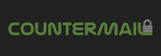 CounterMail.com |
2010 | Suecia | 500 MB | $ 59 | Aceptado | Incorporado | Sí |
 StartMail.com |
2014 | Holanda | 10 GB | $ 59.95 | No | Incorporado | Sí |
KolabNow.com |
2010 | Suiza | 2 GB | $ 60 | Aceptado | No | Sí |
 CryptoHeaven.com |
2001 | Canadá | 200 MB | $ 66 | No | Incorporado | Sí |
Proveedores de correo electrónico interesantes que están en proceso de desarrollo
- Confidant Mail - Un sistema de cifrado de correo de código abierto y no relacionado con SMTP optimizado para adjuntar grandes archivos. Es una alternativa al correo corriente segura y resistente al spam y con servicio en línea de envío de archivos. Utiliza GNU Privacy Guard (GPG) para el cifrado del contenido y para autentificación, y TLS 1.2 con claves efímeras para el transporte cifrado.
Conviértete en tu propio proveedor de correo electrónico con Mail-in-a-Box

Da un paso más allá y toma el control de tu correo on este servidor de correo sencillo de implementar. Mail-in-a-Box te permite convertirte en tu propio proveedor de correo en unos pocos sencillos pasos. Es como si crearas tu propio Gmail, pero uno que controlas de principio a fin. Tecnicamente, Mail-in-a-Box convierte una computadora en la nube en un servidor de correo. Pero no necesitas ser un experto en tecnología para configurarlo. Más: https://mailinabox.email/
Herramientas de privacidad en el correo electrónico
- gpg4usb - Un editor portable muy sencillo de utilizar para cifrar y descifrar cualquier mensaje de texto o archivo. Disponible para Windows y GNU/Linux.
- Mailvelope - Una extensión para el navegador que permite el intercambio de correos cifrados siguiendo el estándar de cifrado OpenPGP.
- Enigmail - Una extensión de seguridad para Thunderbird y Seamonkey. Permite que escribas y recibas mensajes firmados y/o cifrados con el estándar OpenPGP.
- TorBirdy - Esta extensión configura Thunderbird para hacer conexiones sobre la red anónima de Tor.
- Email Privacy Tester - Esta herramienta enviará un correo electrónico a tu direcciòn de correo y realizará varias pruebas relacionadas con la privacidad.
Información relacionada
- Leyes anticuadas sobre "privacidad" dejan el correo electrónico en la nube abierto a la policía - Los datos almacenados en la nube durante más de 6 meses es considerado abandonado y puede ser accedido por agentes de las fuerzas de la ley sin necesidad de una orden judicial. Aprende: Utiliza un cliente de correo externo como Thunderbird o Enigmail, descarga tus correo y almacénalos de manera local. Nunca los dejes en el servidor.
- OpenMailBox almacena durante un año los registros de los metadatos - Discusión en el foro, respuesta del administrador del servicio.
- El FBI se extralimita de nuevo con la incautación de los servidores de May First/Riseup
- El servidor de Autistici/Inventati comprometido - El servicio de cifrado ofrecido por el servidor de Autistici/Inventati ha sido comprometido el 15 de junio de 2004. Se descubrió el 21 de junio de 2005. Un año después. Durante una investigación en un sólo buzón de correo electrónico, la policía postal podría haber aprovechado durante todo un año cada comunicación privada del usuario que ha pasado a través del servidor de autistici.org/inventati.org.
Claws Mail
Vale la pena mencionar
- K-9 Mail - Una aplicación independiente para correo para Android. soporta tanto POP3 como IMAP, pero sólo soporta correo "push" para IMAP.
- GNU Privacy Guard - Cifrado de correo. GnuPG es un conjunto de software de cifrado alternativa a PGP licenciado bajo GPL. Utiliza GPGTools para Mac OS X.
- Mailpile (Beta) - Un cliente de correo web moderno y rápido con cifrado fácil de utilizar para el usuario y características de privacidad.
I2P-Bote
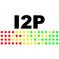I2P-Bote es un sistema de correo electrónico totalmente descentralizado y distribuido. Soporta diferentes identidades y no expone las cabeceras de los correos. Actualmente (2015), todavía está en versión beta y puede accederse al servicio a través de la interfaz de su aplicación web o por IMAP o SMTP. Todos los correos enviados mediante este servicio son cifrados de manera transparente de extremo a extremo y, de manera opcional firmados por el remitente mediante su clave privada.
Sistemas operativos: Windows, Mac, GNU/Linux, Android, F-Droid.
Bitmessage
Bitmessage es un protocolo de comunicaciones basado en las redes P2P utilizado para enviar mensajes cifrados a otra persona o a varios suscriptores. Es descentralizado y sin necesidad de confiaza, lo que significa que no necesitas confiar en ninguna entidad de manera inherente con certificados. Utiliza una autentificación robusta lo que significa que el remitente del mensaje no puede ser suplantado, y su objetivo es ocultar datos "sin contenido".
Sistemas operativos: Windows, Mac, GNU/Linux.
RetroShare
RetroShare crea conexiones cifradas entre tu y tus amigos. Nadie puede espiaros. RetroShare es completamente descentralizado, esto significa que no existen servidores centrales. Es completamente de código abierto y libre. No tiene costos, ni anuncios ni términos de servicio.
Sistemas operativos: Windows, Mac, GNU/Linux.
searx - Código abierto
 Un motor de búsqueda de código abierto, que añade los resultados de otros motores de búsqueda y no guarda información sobre sus usuarios. Sin registros, sin anuncios, y sin seguimiento.
Un motor de búsqueda de código abierto, que añade los resultados de otros motores de búsqueda y no guarda información sobre sus usuarios. Sin registros, sin anuncios, y sin seguimiento.
Qwant
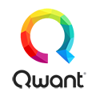La filosofía de Qwant está basada en dos principios: no rastrear al usuario y no sumergir sus búsquedas en una "burbuja". Qwant fue lanzado en Francia en febrero de 2013. Política de privacidad.
Complemento para Firefox
- Google search link fix - Es una extensión para Firefox que previene que las páginas de búsqueda de Google, Yahoo o Yandex puedan modificar os enlaces de sus resultados al hacer clic sobre ellos. Esto es útil cuando copias enlaces pero también ayuda en la privacidad evitando que los motores de búsqueda puedan grabar tus clics. (Código abierto)
Vale la pena mencionar
- MetaGer - un motor de metabúsquedas, que tiene su sede en Alemania. Está enfocado en proteger la privacidad del usuario. Soportado por 24 motores de búsqueda web a pequeña escala propios.
- ixquick.eu - Retorna los diez mejores resultados de múltiples motores de búsqueda. Utiliza un "sistema de estrellas" para clasificar sus resultados premiando con una estrella por cada resultado que ha sido devuelto por un motor de búsqueda. Tiene su base en EEUU y Países Bajos.
Móvil: Signal
Signal es una aplicación para dispositivos móviles desarrollada por Open Whisper Systems. La aplicación ofrece mensajería instantánea y llamadas de voz y vídeo cifradas de extremo a extremo. Signal el libre y de código abierto, permitiendo a cualquiera verificar su seguridad pudiendo auditar el código. También ofrece soporte para grupos de chats cifrados. El equipo de desarrollo está soportado por donaciones de la comunidad y otras donaciones. No hay anuncios, y es de uso gratuito.
Sistemas operativos: Android, iOS.
Wire
 Wire es una aplicación desarrollada por WIRE SWISS GmbH.
La aplicación permite a los usurios compartir mensajería instantánea con cifrado de extremo a extremo, y también llamadas de voz y vídeo. Wire es libre y de código abierto, permitiendo a cualquiera verificar su seguridad auditando el código. El equipo de desarrollo está respaldado por Iconical y en el futuro pondrán a la venta servicios y características para usuarios de pago.
Wire es una aplicación desarrollada por WIRE SWISS GmbH.
La aplicación permite a los usurios compartir mensajería instantánea con cifrado de extremo a extremo, y también llamadas de voz y vídeo. Wire es libre y de código abierto, permitiendo a cualquiera verificar su seguridad auditando el código. El equipo de desarrollo está respaldado por Iconical y en el futuro pondrán a la venta servicios y características para usuarios de pago.
Sistemas operativos: Android, iOS, macOS, Windows, GNU/Linux, Web
Equipo de escritorio: Ricochet
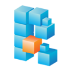Ricochet utiliza la red Tor para comunicarte con tus contactos sin depender de servidores de mensajería. Crea y servicio oculto, que es utilizado para reunir a tus contactos sin revelar tu localización o dirección IP. En vez de un nombre de usuario, obtienes una dirección única, algo parecido a esto ricochet:rs7ce36jsj24ogfw. Otros usuarios de Ricochet pueden utilizar esta dirección para enviarte una petición de contacto, preguntándote si pueden añadirte a su lista de contactos.
Sistemas operativos: Windows, Mac, GNU/Linux.
Vale la pena mencionar
- ChatSecure - ChatSecure es una aplicación libre y de código abierto que habilita la característica "Off The Record" (OTR) sobre XMPP.
- Cryptocat - Mensajería cifrada de código abierto. Puedes compartir archivos y soporta múltiples dispositivos. Disponible para Windows, GNU/Linux y Mac.
- Kontalk - Una red de mensajería instantánea conducida por la comunidad. Soporta cifrado de extremo a extremo. Tanto los canales de cliente-a-servidor como de servidor-a-cliente están completamente cifrados.
- Conversations - Un cliente de Jabber/XMPP de código abierto para teléfonos inteligentes con Android 4.0+. Soporta cifrado de extremo a extremo tanto con OMEMO, OTR como con openPGP.
- Lista de otros clientes OTR (Off The Record).
Información relacionada (enlaces en inglés)
- Ricochet, la mensajería que acaba con los metadatos, para una auditoría de seguridad | Motherboard
- Cuadro de mandos de la mensajería segura | Electronic Frontier Foundation
¿Qué aplicaciones y herramientas mantienen actualmente tus mensajes a salvo? - Chateando en secreto mientras todos estamos siendo observados - firstlook.org
- Usuarios avanzados con necesidades especiales pueden descargar la APK de Signal directamente. La mayoría de los usuarios no deberían hacer esto bajo circunstancias normales.
Móvil: Signal
Signal es una aplicación para dispositivos móviles desarrollada por Open Whisper Systems. La aplicación ofrece cifrado de extremo a extremo para tus llamadas. Signal es libre y de código abierto, permite a cualquiera verificar su seguridad auditando el código. También están soportados los chats de grupo cifrados. El equipo de desarrollo es soportado por donaciones de la comunidad. No hay publicidad, y no cuesta nada utilizarlo.
Sistemas operativos: iOS, Android.
Wire
Wire es una aplicación desarrollada por WIRE SWISS GmbH.
La aplicación permite a los usurios compartir mensajería instantánea con cifrado de extremo a extremo, y también llamadas de voz y vídeo. Wire es libre y de código abierto, permitiendo a cualquiera verificar su seguridad auditando el código. El equipo de desarrollo está respaldado por Iconical y en el futuro pondrán a la venta servicios y características para usuarios de pago.
Sistemas operativos: Android, iOS, macOS, Windows, GNU/Linux, Web
Linphone
Linphone es un servicio IP de comunicación SIP para voz de código abierto, disponible para móviles y equipos de sobremesa y mediante navegador web. Soporta ZRTP para el cifrado de extremo a extremo de comunicación por voz y vídeo.
Sistemas operativos: iOS, Android, Windows Phone, GNU/Linux, Windows, Mac, Navegador (Web)
Vale la pena mencionar
- Jitsi - Jitsi es una multiplataforma de voz(VoIP) libre y de código abierto, para videoconferencias y una aplicación de mensajería instantánea.
- Tox - Software para video llamadas y mensajería cifrado, de comunicación entre pares ("peer to peer") de código libre y abierto.
- Ring (anteriormente SFLphone) - Te ofrece un contro completo de tus comunicaciones y un incomparable nivel de privacidad.
Información relacionada
+Seafile - 100 GB de almacenamiento por 10$/mes
Seafile ofrece 100 GB de almacenamiento por 10$/mes pero también ofrece la oportunidad de montarte tu propio servidor. Tus datos se almacenan en Alemania o con Amazon Web Service en EEUU en la versión en la nube. Cifrado de archivos con tu propia contraseña.
Clientes para sistemas operativos: Windows, Mac, GNU/Linux, iOS, Android. Servidor: GNU/Linux, Raspberry Pi, Windows.
Nextcloud - Escoge tu proovedor de alojamiento
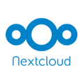Funcionalidades similares al ampliamente utilizado Dropbox, pero con la diferencia de que Nextcloud es de código libre y abierto, y de este modo cualquiera puede instalarlo y trabajar con él sin necesidad de tener que encargar un servidor privado, sin límites de almacenamiento o número de clientes conectados.
Clientes para sistemas operativos: Windows, Mac, GNU/Linux, BSD, Unix, iOS, Android, Fire OS. Servidor: GNU/Linux.
Least Authority S4 - Para expertos
 S4 (de las iniciales de "Simple Secure Storage Service" que traducido sería: servicio de almacenamiento seguro y simple) es el sistema de copia de seguridad de Least Authority tanto para particulares como para negocios. Cifrado en el lado cliente a 100% y transparencia al ser de código abiertop. 25$/mes por almacenamiento ilimitado. Los servidores están en Amazon S3 y con sede en EEUU.
S4 (de las iniciales de "Simple Secure Storage Service" que traducido sería: servicio de almacenamiento seguro y simple) es el sistema de copia de seguridad de Least Authority tanto para particulares como para negocios. Cifrado en el lado cliente a 100% y transparencia al ser de código abiertop. 25$/mes por almacenamiento ilimitado. Los servidores están en Amazon S3 y con sede en EEUU.
Sistemas operativos: GNU/Linux, Windows, Mac, OpenSolaris, BSD. (Instalación para usuarios avanzados)
Información relacionada (enlaces en inglés)
- Cryptomator - Un cliente libre para cifrado AES para tus archivos en la nube. Software de código abierto: Sin puertas traseras, ni es necesario registrarse.
Seafile
Seafile es un software para alojar archivos. Los archivos son almacenados en un servidor central y pueden ser sincronizados en ordenadores portátiles o dispositivos móviles mediante un cliente de Seafile. También se puede acceder a los archivos gracias a la interfaz web del servidor.
Clientes para sistemas operativos: Windows, Mac, GNU/Linux, iOS, Android. Servidor: GNU/Linux, Raspberry Pi, Windows.
Pydio
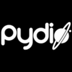Pydio es un software de código abierto que convierte instantáneamente cualquier servidor (con la premisa de tener NAS, cloud IaaS o PaaS) en una plataforma para compartir archivos para tu empresa. Es una alternativa a SaaS Boxes o Drives, con más control, más seguridad y privacidad, y favorable para clientes ligeros.
sistemas operativos: Windows, Mac, GNU/Linux, iOS, Android.
Tahoe-LAFS
Tahoe-LAFS es un sistema de almacenamiento en la nube descentralizado, libre y abierto. Distribuye tus datos a través de multiples servidores. Incluso si alguno de esos servidores falla o es comprometido por un atacante, el sistema completo de almacenamiento continua funcionando correctamente, preservando tu privacidad y seguridad.
Sistemas operativos: Windows, Mac, GNU/Linux.
Vale la pena mencionar
- Nextcloud - Libre y de código abierto, permite a cualquiera instalar y operar con él de manera libre en un servidor privado, sin límites de espacio de almacenamiento o número de clientes conectados.
SparkleShare
 SparkleShare crea una carpeta especial en tu equipo. Puedes añadir de manera remota carpetas (o "proyectos") a esta carpeta. Este proyecto automáticamente se mantendrá sincronizado tanto en el "host" como en todos los "pares" cuando alguien añada, elimine o edite el archivo.
SparkleShare crea una carpeta especial en tu equipo. Puedes añadir de manera remota carpetas (o "proyectos") a esta carpeta. Este proyecto automáticamente se mantendrá sincronizado tanto en el "host" como en todos los "pares" cuando alguien añada, elimine o edite el archivo.
Sistemas operativos: Windows, Mac, GNU/Linux.
Syncany
Syncany permite a los usuarios realizar una copia de seguridad y compartir ciertas carpetas de sus estaciones de trabajo usando algún tipo de almacenamiento. Syncany es de código abierto y ofrece cifrado de datos y una increíble flexibilidad en términos de tipos de almacenamiento y proveedores. Los archivos son cifrados antes de subirse.
Sistemas operativos: Windows, Mac, GNU/Linux.
Syncthing
Syncthing reemplaza servicios en la nube y sincronización con algo abierto, confiable y descentralizado. Tus datos son sólo tus datos y tu deseas escoger donde almacenarlos, si son compartidos con terceros y cómo son transmitidos por Internet.
Sistemas operativos: Windows, Mac, GNU/Linux, Android, BSD, Solaris.
Vale la pena mencionar
- git-annex - Permite gestionar archivos mediante git, sin comprobar el contenido de archivos en git. Mientras que esto puede resulta paradójico, es muy útil cuando manejas archivos más grandes de los que puede actualmente utilizar git, ya sea debido a limitaciones en memoria, tiempo o espacio de disco.
Master Password - Multiplataforma
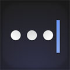Master Password está basado en un un ingenioso algoritmo de generación de contraseñas que garantiza que tus contraseñas nunca van a perderse. Sus contraseñas no son almacenadas: son generadas a la demanda desde tu nombre, el sitio y tu contraseña maestra. No es necesario la sincronización, copias de seguridad o acceso a internet.
Sistemas operativos: Windows, Mac, GNU/Linux, iOS, Android, Web.
KeePass / KeePassX - Local
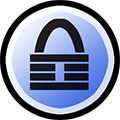KeePass es un gestor de contraseñas libre y de código abierto, que te ayuda a gestionar tus contraseñas de una manera segura. Todas las contraseñas en una base de datos, que es bloqueada con una contraseña maestra o un archivo llave. Las bases de datos son cifradas usando el mejor y más seguro algoritmo actualmente conocido: AES y Twofish. Ver también: KeePassX.
Sistemas operativos: Windows, Mac, GNU/Linux, iOS, Android, BSD.
Vale la pena mencionar
- Generador seguro de contraseñas - genera un conjunto de cadenas de contraseñas únicas, a medida, de alta calidad y de cifrado robusto que son seguras para ser usadas.
- SuperGenPass - Una contraseña maestra y el nombre del dominio del sitio web que estás visitando son usados como "semilla" para utilizarlo en un algoritmo (base-64 MD5). La salida de ese algoritmo es la contraseña que has generado. Recuerdas una contraseña (la "contraseña maestra"), y SGP la utiliza para generar contraseñas únicas y complejas para los sitios web que visitas. La contraseña que generas nunca es almacenada ni transmitida, así que puedes utilizar SGP en tantos equipos como quieras sin necesidad de tener que "sincronizar" nada.
- Password Safe - Si la respuesta es una entre cientos, Password Safe te permite de una manera segura y sencilla crear una lista de nombre/contraseña segura y cifrada. Con Password Safe todo lo que tendrás que hace es crear y recordar una única "contraseña maestra" de tu elección para poder desbloquear y acceder a toda tu lista de nombre/contraseñas.
Información relacionada (enlaces en inglés)
Ley de divulgación de claves - ¿Quién está obligado a entregar las claves de cifrado a las autoridades?
Leyes obligatorias de divulgación de claves exigen a los individuales entregar las claves de cifrado a las autoridades que esten realizando una investigación criminal. Cómo se aplican estas leyes (que pueden ser legalmente obligados a cumplir) puede variar de país a país, pero por lo general se requiere una orden judicial. Defenderse contra las leyes de divulgación de claves incluye datos de esteganografía y cifrado de una manera que proporciona el método una denegabilidad plausible (plausible deniability).
La esteganografía consiste en esconder información sensible (que puede ser cifrada) dentro de datos comunes (por ejemplo, cifrar un archivo de una imagen y dentro esconder un archivo de audio). Con el método denegabilidad plausible (plausible deniability) los datos están cifrados de una manera que previenen que un adversario sea capaz de probar que la información que existía antes existiera (por ejemplo, una contraseña puede descifrar datos sin importancia y otra contraseña, usada en el mismo archivo, podría descrifrar datos sensibles).
Leyes donde se aplica la divulgación de claves
2. Australia
3. Bélgica
4. Canadá
5. Finlandia
6. Francia
7. India
8. Sudáfrica
9. Reino Unido
Leyes donde se podría aplicar la divulgación de claves
2. Suecia (propuesto)
3. Paise Bajos (Los usuarios que saben cómo acceder al sistema pueden ser obligados a compartir su conocimiento, sin embargo, esto no se aplica al propio sospechoso)
4. Estados Unidos (ver información relacionada)
Leyes donde no se aplica la divulgación de claves
Información relacionada (enlaces en inglés)
- Información en Wikipedia
- law.stackexchange.com se pregunta sobre la ley en EEUU
- DEFCON 20: Crypto and the Cops: the Law of Key Disclosure and Forced Decryption
VeraCrypt - Cifrado de disco
 VeraCrypt es una utilidad "freeware" con el software disponible y es software gratuito utilizado para cifrar al vuelo. Puede crear un disco virtual cifrado dentro de un archivo o cifrar una partición o todo el dispositivo de almacenamiento con autentificación antes del arranque. VeraCrypt es una derivación del proyecto TrueCrypt ya discontinuado. Fue lanzado inicialmente el 22 de junio de 2013. De acuerdo a sus desarrolladores, las mejoras de seguridad han sido implementadas y los problemas encontrados en la revisión inicial del código de TrueCrypt han sido tratados.
VeraCrypt es una utilidad "freeware" con el software disponible y es software gratuito utilizado para cifrar al vuelo. Puede crear un disco virtual cifrado dentro de un archivo o cifrar una partición o todo el dispositivo de almacenamiento con autentificación antes del arranque. VeraCrypt es una derivación del proyecto TrueCrypt ya discontinuado. Fue lanzado inicialmente el 22 de junio de 2013. De acuerdo a sus desarrolladores, las mejoras de seguridad han sido implementadas y los problemas encontrados en la revisión inicial del código de TrueCrypt han sido tratados.
Sistemas operativos: Windows, Mac, GNU/Linux.
GNU Privacy Guard - Cifrado de correo electrónico
 GnuPG disponible bajo licencia GPL es una alternativa al conjunto de software de criptografía PGP. GnuPG es compatible con RFC 4880, que es el estándar actual que siguen las especificaciones OpenPGP. La versión actual de PGP (y Veridis' Filecrypt) son interoperables con GnuPG y otros sistemas compatibles con OpenPGP. GnuPG es una parte del proyecto GNU de la Free Software Foundation, y ha recibido una financiación importante del gobierno alemán. GPGTools para Mac OS X.
GnuPG disponible bajo licencia GPL es una alternativa al conjunto de software de criptografía PGP. GnuPG es compatible con RFC 4880, que es el estándar actual que siguen las especificaciones OpenPGP. La versión actual de PGP (y Veridis' Filecrypt) son interoperables con GnuPG y otros sistemas compatibles con OpenPGP. GnuPG es una parte del proyecto GNU de la Free Software Foundation, y ha recibido una financiación importante del gobierno alemán. GPGTools para Mac OS X.
Sistemas operativos: Windows, Mac, GNU/Linux, Android, BSD.
PeaZip - Cifrado de archivos
 PeaZip es un gestor de archivos libre y de código abierto realizado por Giorgio Tani. Soporta su formato de archivos nativo PEA (que ofrece compresión, división en multi volúmenes y cifrado atentificado flexible y esquemas de comprobación de integridad) y otros formatos más conocidos, en especial énfasis en el manejo de formatos abiertos. Soporta 181 tipos de extensiones de archivos (en la versión 5.5.1).
PeaZip es un gestor de archivos libre y de código abierto realizado por Giorgio Tani. Soporta su formato de archivos nativo PEA (que ofrece compresión, división en multi volúmenes y cifrado atentificado flexible y esquemas de comprobación de integridad) y otros formatos más conocidos, en especial énfasis en el manejo de formatos abiertos. Soporta 181 tipos de extensiones de archivos (en la versión 5.5.1).
Alternativas en Mac: Keka es un archivador de archivos libre.
Sistemas operativos: Windows, GNU/Linux, BSD.
Vale la pena mencionar
- Cryptomator - Cifrado AES en el lado del cliente para archivos en la nube. Software de código abierto: Sin puertas traseras, sin registro.
- miniLock - Una extensión para el navegador Google Chrome / Chromium para cifrar archivos utilizando una contraseña secreta. Fácil de utilizar. Del mismo desarrollador de Cryptocat.
- AES Crypt - Utilizando un poderoso algoritmo de cifrado de 256 bits, AES Crypt puede resguardar de manera segura tus archivos más sensibles. Para Windows, Mac, GNU/Linux y Android.
- DiskCryptor - Un sistema de cifrado para el disco completo o partición para Windows incluyendo la posibilidad de cifrar la partición o el disco en el que el sistema operativo está instalado.
Tor Project
La red Tor es un grupo de voluntarios que ponen a disposición de la red sus servidores que permiten a la gente aumentar su privacidad y seguridad en internet. Los usuarios de Tor emplean esta red para conectarse a través de una serie de túneles virtuales en vez de mediante una conexión directa, esto permite tanto a las organizaciones como a los usuarios individuales compartir información en redes públicas sin comprometer su privacidad. Tor es una herramienta efectiva para sortear la censura.
Sistemas operativos: Windows, Mac, GNU/Linux, iOS, Android, OpenBSD.
Red anónima I2P
El Proyecto de Internet Invisible (The Invisible Internet Project o simplemente I2P) es una capa de red de computadoras que permiten aplicaciones y mandar mensajes unos a otros de manera pseudoanónima y segura. Su uso incluye navegación por la web anónima, chateo, blogueo y transferencias de archivos. El software que implementa esta capa es llamado un router I2P router y el computador que ejecuta I2P es llamado una nodo I2P. El software es libre y de código abierto y está publicado bajo múltiples licencias.
Sistemas operativos: Windows, Mac, GNU/Linux, Android, F-Droid.
El proyecto Freenet
Freenet es una plataforma de conexión entre pares para resistir la censura en las comunicaciones. Utiliza un almacenamiento de datos descentralizado y distribuido para mantener y distribuir la información, y tiene un conjunto de software libre para publicar y comunicarse en la web sin miedo a la censura. Tanto Freenet como algunas de sus herramientas asociadas fueron originalmente diseñadas por Ian Clarke, que definió la meta de Freenet como una forma de ofrecer liberdad de expresión en internet con una fuerte protección del anonimato.
Sistemas operativos: Windows, Mac, GNU/Linux.
Vale la pena mencionar
- RetroShare - Una aplicación multiplataforma de código abierto, una plataforma de comunicación segura y descentralizada de "amigo a amigo".
- GNUnet - GNUnet ofrece una sólida fundaciñon de software libre para una red global y distribuida que ofrezca seguridad y privacidad.
 Bitcoin es un pseudónimo de criptomoneda que permite a cualquiera realizar transacciones en línea sin necesidad de registros o sin dar ningún tipo de información personal.
Bitcoin es un pseudónimo de criptomoneda que permite a cualquiera realizar transacciones en línea sin necesidad de registros o sin dar ningún tipo de información personal.Zcash
Zcash ofrece total confidencialidad en los pagos, mientras que mantiene una red descentralizada utilizando un blockchain público. A diferencia de Bitcoin, las transacciones con Zcash esconden automáticamente el remitente, el beneficiario y el valor de todas las transacciones en el blockchain.
Sistema operativo: GNU/Linux.
ShadowCash
ShadowCash es una criptomoneda anónima construida con el código base de Bitcoin añadiendo características adicionales de técnicas criptográficas que permiten la imposibilidad de localización lo que significa que los atacantes maliciosos no pueden identificar al remitente ni al beneficiario. También incluye mensajería descentralizada y cifrada similar a BitMessage.
Sistemas operativos: Windows, Mac, GNU/Linux.
Vale la pena mencionar
- Dash - Una moneda digital de código abierto, y centrada en la privacidad con transacciones instantáneas. Te permite mantener tus finanzas en privado y realizar transacciones sin esperas.
- Monero Monero es una moneda segura, privada y que no deja rastro. Es de código abierto y disponible libremente para todos.
Diaspora*
 Diaspora* está basada en tres filosofías claves: descentralización, libertad y privacidad. Pretende hacer frente a los problemas de privacidad relacionados con las redes sociales centralizadas permitiendo a los usuarios crear su propio servidor (o también conocido como "pod") para almacenar contenido, "pods" que pueden interactuar para compartir actualizaciones de estado, fotografías y otros datos sociales.
Diaspora* está basada en tres filosofías claves: descentralización, libertad y privacidad. Pretende hacer frente a los problemas de privacidad relacionados con las redes sociales centralizadas permitiendo a los usuarios crear su propio servidor (o también conocido como "pod") para almacenar contenido, "pods" que pueden interactuar para compartir actualizaciones de estado, fotografías y otros datos sociales.
Friendica
Friendica pone enfasis en unos ajustes de privacidad extensos y una instalación sencilla en un servidor. Pretende federar con tantas redes sociales como sea posible. Actualmente los usuarios de Friendica pueden integrar contactos de Facebook, Twitter, Diaspora, GNU social, App.net, Pump.io y otros servicios.
GNU social
 Aunque ofrece funcionalidades similares a Twitter, GNU social busca ofrecer el potencial de unas comunicacions abiertas, compatibles entre servicios y distribuidas entre las comunidades de microblogueo. Empresas y usuarios particulares pueden instalar y controlar sus propios servicios y datos. Los nodos públicos más conocidos son quitter.se y gnusocial.no.
Aunque ofrece funcionalidades similares a Twitter, GNU social busca ofrecer el potencial de unas comunicacions abiertas, compatibles entre servicios y distribuidas entre las comunidades de microblogueo. Empresas y usuarios particulares pueden instalar y controlar sus propios servicios y datos. Los nodos públicos más conocidos son quitter.se y gnusocial.no.
Información relacionada
- Borra tu cuenta de Facebook - Enlace directo para borrar tu cuenta de Facebook sin posibilidad de reactivarla de nuevo.
- Cómo borrar de manera permanente una cuenta de Facebook - Esta guía te servirá para borrar tu cuenta de Facebook de una manera exitosa.
DNSCrypt - Herramienta
 Un protocolo de comunicaciones seguras entre el cliente y la resolución de DNS. El protocolo DNSCrypt utiliza una criptografía de curva elíptica de alta velocidad y alta seguridad y es muy similar a DNSCurve, pero enfocado en las comunicaciones entre un cliente y la resolución de DNS de primer nivel.
Un protocolo de comunicaciones seguras entre el cliente y la resolución de DNS. El protocolo DNSCrypt utiliza una criptografía de curva elíptica de alta velocidad y alta seguridad y es muy similar a DNSCurve, pero enfocado en las comunicaciones entre un cliente y la resolución de DNS de primer nivel.
Sistema operativo: Windows, Mac, GNU/Linux, iOS con Jailbreak.
OpenNIC - Servicio
 OpenNIC es una red alternativa de información que se llama a sí misma como una alternativa a ICANN y sus registros. Como toda alternativa a los sistemas DNS raíz, los dominios alojados en OpenNIC son inaccesibles para la amplia mayoría de internet. Sólo una configuración específica en una resolución de DNS hace esto accesible, y muy pocos proveedores de servicios de internet tienen esta configuración..
OpenNIC es una red alternativa de información que se llama a sí misma como una alternativa a ICANN y sus registros. Como toda alternativa a los sistemas DNS raíz, los dominios alojados en OpenNIC son inaccesibles para la amplia mayoría de internet. Sólo una configuración específica en una resolución de DNS hace esto accesible, y muy pocos proveedores de servicios de internet tienen esta configuración..
Sistemas operativos: multiplataforma.
Vale la pena mencionar
- NoTrack - Un servidor de DNS que bloquea los sitios que rastrean. Actualmente funciona en Debian y Ubuntu.
- Namecoin - Un DNS descentralizado de código abierto y de libre registro e información y con un sistema de transferencia basado en Bitcoin.
Laverna
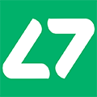Laverna es una aplicación web de JavaScript para tomar datos mediante un editor con Markdown y soporte para cifrado. La aplicación almacena todas tus notas en bases de datos de tu navegador, lo que es buena por razones de seguridad y privacidad, ya que sólo tu tienes acceso.
Sistemas operativos: Windows, Mac, GNU/Linux.
Turtl
Turtl te permite tomar notas, marcadores de sitios web, y almacenar documentos para proyectos privados. Desde almacenar contraseñas con tus compañeros de trabajo hasta llevar un seguimiento de un artículo en el que estás escribiendo, Turtl lo mantiene todo a salvo de todo el mundo y sólo tu tienes acceso y aquellos con los que lo hayas compartido.
Sistemas operativos: Windows, Mac, GNU/Linux, Android.
Standard Notes
 Standard Notes is a simple and private notes app that makes your notes easy and available everywhere you are. Features end-to-end encryption on every platform, and a powerful desktop experience with themes and custom editors.
Standard Notes is a simple and private notes app that makes your notes easy and available everywhere you are. Features end-to-end encryption on every platform, and a powerful desktop experience with themes and custom editors.Vale la pena mencionar
- Paperwork - Una solución de código abierto y auto alojada. Para servidores PHP / MySQL.
Vale la pena mencionar
- hastebin.com - Haste es un servicio de compartir textos de código abierto escrito en node.js, que es muy sencillo de instalar en cualquier red.
Etherpad
 Etherpad es un editor de código abierto altamente personalizable que ofrece edición de archivos de manera colaborativa en tiempo real. Etherpad te permite editar documentos de manera colaborativa en tiempo real, mejor que editores multiusuario que se ejecutan en tu navegador. Escribe artículos, notas de prensa, listas de cosas a hacer, etc.
Etherpad es un editor de código abierto altamente personalizable que ofrece edición de archivos de manera colaborativa en tiempo real. Etherpad te permite editar documentos de manera colaborativa en tiempo real, mejor que editores multiusuario que se ejecutan en tu navegador. Escribe artículos, notas de prensa, listas de cosas a hacer, etc.
Sistemas operativos: Windows, Mac, GNU/Linux.
EtherCalc
 EtherCalc es una hoja de cálculo web. Los datos son guardados en la web, y la gente puede editar el mismo documento al mismo tiempo. Los cambios son instantáneamente reflejados en todas las pantallas. Trabaja de manera conjunta en inventarios, formularios de encuestas, sesiones de tormentas de ideas.
EtherCalc es una hoja de cálculo web. Los datos son guardados en la web, y la gente puede editar el mismo documento al mismo tiempo. Los cambios son instantáneamente reflejados en todas las pantallas. Trabaja de manera conjunta en inventarios, formularios de encuestas, sesiones de tormentas de ideas.
Sistemas operativos: Windows, Mac, GNU/Linux, FreeBSD, navegador.
ProtectedText
 ProtectedText es una aplicación web de código abierto. Cifra y descifra texto en el navegador, y la contraseña (o su "hash") nunca se envía al servidor, así el texto no puede ser descifrado incluso aunque sea pedido por las autoridades. Sin cookies, sin sesiones, sin registros, sin rastreo de sus usuarios.
ProtectedText es una aplicación web de código abierto. Cifra y descifra texto en el navegador, y la contraseña (o su "hash") nunca se envía al servidor, así el texto no puede ser descifrado incluso aunque sea pedido por las autoridades. Sin cookies, sin sesiones, sin registros, sin rastreo de sus usuarios.
Sistemas operativos: Todos los navegadores.
Vale la pena mencionar
- dudle - Una aplicación de planificación "online", que es libre y de código abierto. Programar encuentros o realizar pequeñas encuestas. Sin recopilación de correos electrónicos o necesidad de resgistros.
- Turtl - Recuerda ideas, sigue la pista de investigaciones, comparte documentos, o marcadores de tus sitios favoritos. Turtl hace sencillo organizar tu vida y utiliza un sólido cifrado para mantener todo a salvo.
 Debian es un sistema operativo similar a Unix y una distribución de GNU/Linux que está compuesta completamente por software libre y de código abierto, la mayoría de este bajo una licencia "GNU General Public License", y empaquetado por un grupo de usuarios conocidos como el proyecto Debian.
Debian es un sistema operativo similar a Unix y una distribución de GNU/Linux que está compuesta completamente por software libre y de código abierto, la mayoría de este bajo una licencia "GNU General Public License", y empaquetado por un grupo de usuarios conocidos como el proyecto Debian.Trisquel
Trisquel es un sistema operativo basado en GNU/Linux derivado de Ubuntu. El proyecto tiene como objetivo crear un sistema operativo completamente software libre sin software ni firmware privativo y utiliza Linux-Libre, una versión del kernel Linux del que se ha eliminado el código no libre ("blobs" binarios).
Qubes OS
Atención
Vale la pena mencionar
- OpenBSD - Un proyecto que produce un sistema operativo libre, basado en BSD y similar a Unix. Enfatiza en la portabilidad, la estandarización, corrección, seguridad proactiva y cifrado integrado.
- Arch Linux - Una distribución de GNU/Linux simple y ligera. Está compuesta sobre todo por software libre y de código abierto, y fomenta la participación de la comunidad. Parabola es una versión completamente abierta de Arch Linux.
- Whonix -Una distribución de GNU/Linux basada en Debian GNU/Linux enfocada en la seguridad. Su objetivo es ofrecer privacidad, seguridad y anonimato en internet. El sistema operativo consiste en dos máquinas virtuales, una estación de trabajo y una pasarela Tor. Todas las comunicaciones son forzadas a pasar a través de la red Tor para lograr esto.
Tails
 Tails es un sistema operativo "live" que puede arrancar en cualquier equipo desde un DVD, una memoria USB o una tarjeta SD. Su objetivo es preservar la privacidad y el anonimato, y ayuda a: utilizar internet de manera anónima y evitar la censura, las conexiones a internet van a través de la red Tor, no deja rastros en el equipo de su uso, utiliza las herramientas más novedosas para cifrar archivos, correos y mensajería instantánea.
Tails es un sistema operativo "live" que puede arrancar en cualquier equipo desde un DVD, una memoria USB o una tarjeta SD. Su objetivo es preservar la privacidad y el anonimato, y ayuda a: utilizar internet de manera anónima y evitar la censura, las conexiones a internet van a través de la red Tor, no deja rastros en el equipo de su uso, utiliza las herramientas más novedosas para cifrar archivos, correos y mensajería instantánea.
KNOPPIX
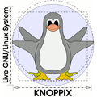Knoppix es un sistema operativo basado en Debian y diseñado para ser ejecutado directamente desde un CD / DVD (Live CD) o una memoria USB (Live USB), uno de los primeros en este tipo de sistemas operativos. Cuando arranca un programa, es cargado desde el soporte físico y desomprimido en la memoria RAM. La descompresión es transparente y se hace "al vuelo".
Puppy Linux
El sistema operativo Puppy Linux es una distribución de GNU/Linux ligera enfocada en un uso sencillo y en un mínimo gasto de recursos de memoria. El sistema entero puede ser ejecutado desde la memoria RAM ya que las versiones actuales ocupan sólo 210 Mb, permitiendo que el medio de arranque sea extraído después de que el sistema operativo haya arrancado.
Vale la pena mencionar
- Tiny Core Linux - Un sistema operativo Linux mínimo enfocado a ofrecer un sistema base utilizando BusyBox y FLTK. La distribución es famosa por su tamaño (15 Mb) y minimalismo, con funcionalidades adicionales ofrecidas por extensiones.
 LineageOS es un sistema operativo de código abierto para teléfonos inteligentes y tabletas, basedo en Android. Está desarrollado como software libre y de código abierto basado en los lanzamientos oficiales de Android por parte de Google. Es la continuación del proyecto CyanogenMod.
LineageOS es un sistema operativo de código abierto para teléfonos inteligentes y tabletas, basedo en Android. Está desarrollado como software libre y de código abierto basado en los lanzamientos oficiales de Android por parte de Google. Es la continuación del proyecto CyanogenMod.Vale la pena mencionar
- Replicant - Un sistema operativo de código abierto basado en Android, que tiene como objetivo reemplazar todos los componentes privativos con software libre.
- Copperhead - Un sistema operativo basado de código abierto basado en Android, disponible para algunos dispositivos Nexus.
- OmniROM - Un sistema operativo libre para teléfonos inteligentes y tabletas, basado en la plataforma Android.
OpenWrt
 OpenWrt es un sistema operativo (en particular, un sistema operativo embebido) basado en el kernel de Linux, principalmente utilizado en dispositivos para encaminar el tráfico de red. Los principales componente son el kernel Linux, util-linux, uClibc y BusyBox. Todos los componentes han sido optimizados en su tamaño, para ser suficientemente reducidos para que quepan en el limitado almacenamiento y memoria disponible en los routers caseros.
OpenWrt es un sistema operativo (en particular, un sistema operativo embebido) basado en el kernel de Linux, principalmente utilizado en dispositivos para encaminar el tráfico de red. Los principales componente son el kernel Linux, util-linux, uClibc y BusyBox. Todos los componentes han sido optimizados en su tamaño, para ser suficientemente reducidos para que quepan en el limitado almacenamiento y memoria disponible en los routers caseros.
pfSense
 pfSense es un software de código abierto para computadores cortafuego/routers basado en FreeBSD. Está instalado en un computador dedicado a ser cortafuegos/router en una red y es conocido por su seguridad y por ofrecer características a menudo sólo disponibles en caros cortafuegos comerciales. pfSense es comunmente utilizado como un cortafuego perimetral, router, punto de acceso wifi, servidor DHCP, servidor DNS, y un terminal VPN.
pfSense es un software de código abierto para computadores cortafuego/routers basado en FreeBSD. Está instalado en un computador dedicado a ser cortafuegos/router en una red y es conocido por su seguridad y por ofrecer características a menudo sólo disponibles en caros cortafuegos comerciales. pfSense es comunmente utilizado como un cortafuego perimetral, router, punto de acceso wifi, servidor DHCP, servidor DNS, y un terminal VPN.
LibreWRT
 LibreWRT es una distribución de GNU/Linux-libre para equipos con recursos mínimos, como los Ben Nanonote, basado en los routers wifi ath9k, y otro hardware que respeta tu libertad utilizando software libre. Es utilizado por la Free Software Foundation en sus puntos de acceso y routers que ofrece conectividad a sus equipos portátiles en sus oficinas.
LibreWRT es una distribución de GNU/Linux-libre para equipos con recursos mínimos, como los Ben Nanonote, basado en los routers wifi ath9k, y otro hardware que respeta tu libertad utilizando software libre. Es utilizado por la Free Software Foundation en sus puntos de acceso y routers que ofrece conectividad a sus equipos portátiles en sus oficinas.
Vale la pena mencionar
- OpenBSD - Un proyecto que produce un sistema operativo libre, basado en BSD y similar a Unix. Enfatiza en la portabilidad, la estandarización, corrección, seguridad proactiva y cifrado integrado.
- DD-WRT - Un firmware basado en Linux para routers y puntos de acceso wifi. Es compatible con muchos modelos de routers y puntos de acceso.

- La sincronización de datos está habilitada por defecto.
- El historial de navegación y los sitios web abiertos.
- El ajuste de las aplicaciones.
- Los nombres de los puntos WiFi y contraseñas.
- Tu dispositivo es por defecto marcado con un identificador único para la publicidad.
- Usado para ofrecerte anuncios personalizados por anunciantes de terceras partes y redes de publicidad.
- Cortana puede recopilar cualquiera de tus datos.
- Las pulsaciones de las teclas, búsquedas y entradas de micrófono.
- Datos del calendario.
- La música que escuchas.
- Información de las tarjetas de crédito.
- Las compras.
- Microsoft puede recopilar cualquier dato personal.
- Tu identidad.
- Contraseñas.
- Demografía.
- Intereses y hábitos.
- Datos usados.
- Contactos y relaciones.
- Datos de localización.
- Contenido como correos electrónicos, mensajería instantánea, listas de llamadas, grabaciones de audio y vídeo.
- Tus datos pueden ser compartidos.
- Cuando descargas Windows 10, autorizas a Microsoft a compartir cualquiera de los datos antes mencionados con cualquier tercera parte, con o sin consentimiento.
Esta herramienta utiliza algunos de los métodos conocidos que intentan deshabilitar las características de rastreo más importantes en Windows 10.
Algunas buenas noticias (enlaces en inglés)
- Destruye el espionaje de Windows 10 - Herramienta de código abierto Sitio web oficial.
- Comparación de herramientas de privacidad en Windows 10 - ghacks.net
- Repara la privacidad en Windows 10. - fix10.isleaked.com
- Windows 10 no ofrece mucha privacidad por defecto: Aquí cómo solucionarlo. - Ars Technica.
- Guía: Cómo deshabilitar el registro de datos en W10.
Más malas noticias (enlaces en inglés)
- Windows 10 envía tus datos 5.500 veces cada día después de configurar los ajustes de privacidad. - The Hacker News.
- Incluso cuando dice no hacerlo, Windows 10 simplemente no puede parar de hablar con Microsoft. No es de extrañar que los activistas por la privacidad estén en pie de guerra. - Ars Technica.
- Cuales son los ajustes de "pesadilla de privacidad" actualmente están presentes en Windows 10. - Lifehacker.
- Windows 10 se reserva el derecho a bloquear los juegos "pirateados" y el hardware 'no autorizado'. - Techdirt.
Argumentar que no te preocupas por el derecho a la privacidad porque no tienes nada que esconder no es diferente a decir que no te preocupas por la libertad de expresión porque no tienes nada que decir.
La NSA ha construido una infraestructura que les permite interceptar casi cualquier cosa. Con esta capacidad, la amplia mayoría de las comunicaciones humanas están automáticamente ingeridas sin objetivo. Si quisiera ver tus correos electrónicos o el teléfono de tu esposa, todo lo que tendría que hacer es utilizar intersecciones. Puedo conseguir tus correos electrónicos, contraseñas, grabaciones de llamadas de teléfono, tarjetas de crédito. No quiero vivir en una sociedad que hace esta clase de cosas... No quiero vivir en un mundo donde todo lo que hago y digo es grabado. Eso es algo que no estoy dispuesto a apoyar ni consentir.
Todos necesitamos lugares donde ir a explorar sin miradas críticas de otra gente, sólo en un reino donde no somos vigilados podemos realmente probar los límites de quien queremos ser. Es realmente en el reino privado donde la disidencia, creatividad y la exploración personal descansa.
Guías
- Autodefensa contra la vigilancia por la EFF - Guía para defenderte de la vigilancia usando tecnología segura y desarrollando prácticas cuidadosas.
- The Crypto Paper - Privacidad,seguridad y anonimato para todos los usuarios de internet.
- Guía de autodefensa del correo electrónico de la FSF - Una guía para combatir la vigilancia mediante el cifrado GnuPG.
- La guía definitiva sobre privacidad - Excelente guía sobre privacidad escrita por los creadores del sitio web bestVPN.com.
- Guías de privacidad IVPN - Estas guías de privacidad explican cómo conseguir una mayor libertad, privacidad y anonimato a través de la compartimentación y aislamiento.
- La guía definitiva de la privacidad "online" - Exhaustiva "Trucos de privacidad nivel ninja" y más de 150 herramientas.
Información
- r/privacytoolsIO Wiki - La wiki de privacytools.io en reddit.com.
- ¡Seguridad ahora! - Podcast semanal sobre seguridad en internet por Steve Gibson y Leo Laporte.
- TechSNAP - Un podcast semanal sobre sistemas, redes y administración. Cada semana TechSNAP repasa las historias que han nos han impactado a todos en la industria de la tenología.
- Keybase.io - Consigue una clave pública, segura, empezando con el nombre de usuario de redes sociales.
- Freedom of the Press Foundation - Apoyando y defendiendo el periodismo dedicado a la transparencia y la rendición de cuentas desde 2012.
- Erfahrungen.com - Un sitio web Alemán agregador de revisiones de servicios relacionados con la privacidad.
- Términos del servicio; No los leí - “He leído y estoy de acuerdo con los términos” es la mayor mentira en la web. Tenemos como objetivo solucionar eso.
Herramientas
- ipleak.net - Detección de IP/DNS - Cual es tu IP, cual es tu DNS, qué información envías a los sitios web.
- La lista definitiva de recursos de pruebas de privacidad "online" - Una colección de sitios de internet que comprueban si tu navegador web filtra información.
- PRISM Break - Todos tenemos derecho a la privacidad, que puedes ejercer hoy cifrando tus comunicaciones y poner fin a su dependencia de los servicios privativos.
- Security in-a-Box - Una guía de seguridad digital para activistas y defensores de derechos humanos de todo el mundo.
- AlternativeTo.net - Una gran colección de software de código abierto "online" y autohospedado ordenado por preferencias.
- SecureDrop - Un sistema de envíos de confidentes realizado con código abierto que los medios y organizaciones pueden utilizar para aceptar de manera segura documentos de fuentes anónimas y comunicarse con ellas. Fue creado originalmente por Aaron Swartz y es actualmente gestionado por Freedom of the Press Foundation.
- Reset The Net - Privacy Pack - Ayuda a luchar contra la vigilancia masiva. Consigue estas herramientas para protegerte tu mismo y a tus amigos.
- Security First - Umbrella es una aplicación para Android que ofrecetodo lo que necesita el dispositivo para operar de manera segura en un entorno hostil.
Participa con sugerencias y críticas constructivas
Es importante para un sitio web como privacytools-es estar actualizado. Mantén un ojo sobre las actualizaciones de software de las aplicaciones listadas aqui. Sigue las noticias más actuales sobre los proveedores que están recomendados. Tratamos de hacer lo mejor que se puede pero no somos perfectos e internet cambia rápido. Si encuentras algún error, o crees que un proveedor no debería estar en estas listas, o un servicio cualificado no aparece, o una extensión del navegador es la mejor opción o cualquier otra cosa... habla con nosotros, por favor. Este es un proyecto comunitario y nuestro objetivo es ofrecer la mejor información disponible para una mayor privacidad.
Haz sugerencias en Reddit
La comunidad activa en Reddit es una forma de estar al tanto de actualizaciones o de hacer sugerencias. ¡Únete ahora! (Información)
Sobre privacytools-es
Este proyecto nace como interés personal de traducir al castellano la página original de privacytools.io alojada en GitHub. La página original ofrece una importante colección de recursos e información contra el seguimiento masivo de nuestros datos en la actual sociedad tecnológica.
Puedes seguir los "commits" aceptados en la página original en inglés, y que se irán incorporando en esta versión traducida poco a poco, en este enlace: https://github.com/privacytoolsIO/privacytools.io/commits/master
Esta página está creada como un "fork" (una versión derivada) de la página antes mencionada, trata de ofrecer a la comunidad de habla hispana información sobre herramientas para proteger su privacidad. Trataré de mantenerla actualizada a los últimos cambios que se realicen en la página original, pero quién sabe... Está mantenida y traducida sólo por mi, y la ayuda en la revisión de ciertos colegas (gracias Alberto y jcsl). Míos por tanto serán los aciertos y errores. Para subsanar los segundos, manda mejoras o sugerencias.
Los enlaces a donaciones, Bitcoins, etc. Corresponden a la página original en inglés. Este proyecto de traducción no se financia con nada ni tiene interés en hacerlo. Todo está hecho de manera desinteresada, con el único fin de dar a conocer las herramientas, y como medio de conocimiento y aprendizaje.
Tienes el código fuente de la página traducida disponible en GitLab.
Traducción realizada por: VictorhckSin anuncios, sin analíticas de Google, sin afiliados, sin peticiones de terceros sitios
 Creative Commons
Creative Commons
 kopimi (copyme)
kopimi (copyme)
 Dona: 1N4bKCx3kpvUTBhsvbmthPDssN8ATPEhgt o utiliza PayPal.
Dona: 1N4bKCx3kpvUTBhsvbmthPDssN8ATPEhgt o utiliza PayPal.
privacytools-es es un sitio web que tiene una motivación social para ofrecer información para proteger la seguridad de tus datos y privacidad. Nunca confíes en ninguna compañía tu privacidad, siempre cifra.